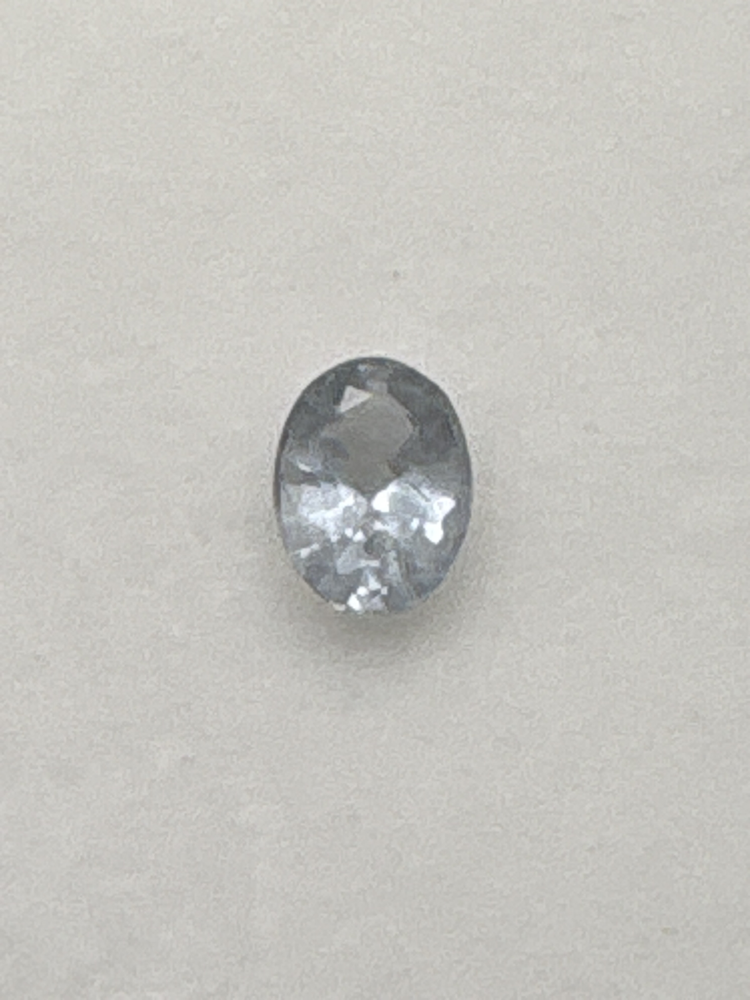

The Gem Drawer › No. 110

A second Paraiba-labeled stone, this one grey-silver rather than blue-green.
| Catalogue no. | #110 |
|---|---|
| As labeled | Paraiba Tourmaline (as labeled) - CAUTION: color is pale gray/silvery-blue, not within the blue-green family genuine Paraiba occupies - verify before listing at Paraiba prices - see notes |
| Shape / cut | Oval |
| Weight | Not recorded |
| Measurements | Not recorded |
| Colour | Pale gray / silvery-blue (as photographed - notably outside genuine Paraiba's blue-green color range) |
| Clarity / condition | Not recorded |
Interested in this stone, or in the collection as a whole? Terry VanWormer can answer questions about it.
Click here to inquireor email Terry directly at maxrebo34@gmail.com